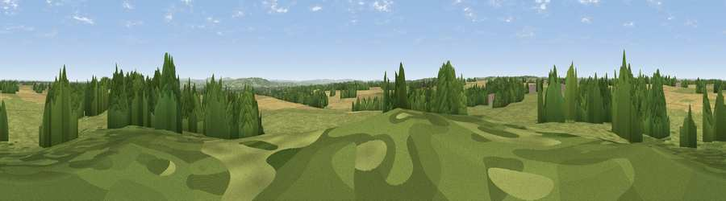

Viewpoint near Biddestone
#40832 in England · top 83% of its area beats it · near BiddestoneWhere it is
The exact computed spot (ST 87086 73861). Click the marker for map links.
The view, rendered

A 360° render of this exact spot computed from the terrain model, tree cover and land cover — summer colours, afternoon light, calibrated against photographs of famous viewpoints. Real trees, hedges and buildings will differ in detail.
The panorama
Grey silhouette: terrain skyline in each direction (720 bearings, Earth curvature and refraction included). Dashed green: skyline with trees (+15 m) and buildings (+8 m) as obstacles. Blue strip: how far the ground is visible on each bearing.
Where the view opens
Wedge length = distance to the farthest visible ground on that bearing (vegetation-aware). Rings at 10, 25 and 50 km.
What fills the view
59% grassland · 26% cropland · 14% woodland · 1% built-up
Angular shares of the visible panorama (visual magnitude), not map area. Landscape diversity 0.43 (0–1 Shannon).
Key numbers
More beautiful places nearby
The staircase of upgrades: each row has a higher view potential than everything closer. Driving times are estimates from straight-line distance, calibrated against real road routing — check an actual route before setting out.
| Place | Direction | Drive | Score |
|---|---|---|---|
| Lan Hill | NE · 1 km | ~3 min | 48.5 |
| Viewpoint near Bowden Hill | SE · 8 km | ~16 min | 62.1 |
| Viewpoint near Bathford | SW · 11 km | ~20 min | 64.0 |
| Viewpoint near Hinton | WNW · 12 km | ~23 min | 65.9 |
| Viewpoint near Heddington | SE · 15 km | ~27 min | 71.2 |
| Viewpoint near Heddington | SE · 16 km | ~28 min | 73.0 |
| King's Play Hill | ESE · 16 km | ~28 min | 73.9 |
| Hanging Hill | WSW · 16 km | ~29 min | 76.4 |
51.46357, -2.18728 · source: osm peak · position refined by local search. Computed location — check access rights before visiting.